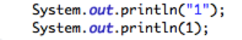
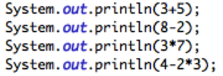
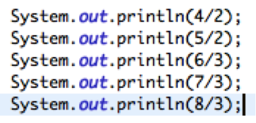
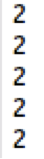
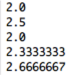

In this lesson we will introduce you, the student to computation on a computer. Computers can calculate complex arithmetic problems at lightning speed. This has proven to be supremely useful with the widespread use of calculators. There are five basic arithmetic operations we will introduce in this lesson: Addition (+), Subtraction (-), Multiplication (*) Division (/), and modulus (%). Computers follow the same order of operations that we learned in our elementary schooling, so it is important to remember:
In Hello World we printed a short phrase. Printing a number is almost identical to printing a phrase, but without the quotes. Try printing your favorite number.
Above are two lines of code and their corresponding output. At first glance these seem identical, however our computer treats them differently. The first line treats “1” as a phrase, so we can’t perform mathematical operations on it. The second line treats 1 as a number. When doing arithmetic, we always want to treat numbers as, well, numbers!
Addition, Subtraction and Multiplication are performed with the symbols +,-,
and * respectively. Try manipulating a few numbers with these operators.

Above are four lines of code and their corresponding output. These are
simply calculations that you can do in your head or on a calculator to verify that the
computer was right. Notice how the fourth line of code performs the 2*3 portion
first, just like the order of operations.
The behavior of division is slightly more complicated than the other
operations. So far, we have dealt only with whole numbers, or “integers”.
Sometimes, the result of a division operation is a fraction. What does the computer
do in this situation?



Above are five different cases of division. Although computers are very
powerful, only the first and third cases result in the correct answer. On the far right,
I included what the answers should have been. Notice how no matter what, the
computer rounds down, even for the last example when 2.66 is clearly closer to
three. This is called floor division and when working with whole numbers, Java
always does floor division. Of course, there is a simple fix to get around this issue,
but I will save that for the next lesson. Maybe you can figure out on your own. All it
takes is a adjusting how a number is formatted.
Modulus should be a term you are unfamiliar with, but fear not, it is essentially a synonym for remainder. When performing division we often encounter cases of imperfect division. That is, when we can’t make equal groups. Imagine we live in a world that has yet to develop the knife. I have five apples, and want to share them with you. I prepare two baskets, and place an apple in each until suddenly, I only have one apple but I can’t put it in either basket because that’s unfair. The modulus operator gives this apple. In the previous section we printed (5/2) and got 2. If we did 5%2, we would get 1, the leftover apple that has no home.

As in the real world, arithmetic is fairly simple once you know the basics. In our next lesson we will look at variables, which we can use in conjunction with our basic arithmetic.